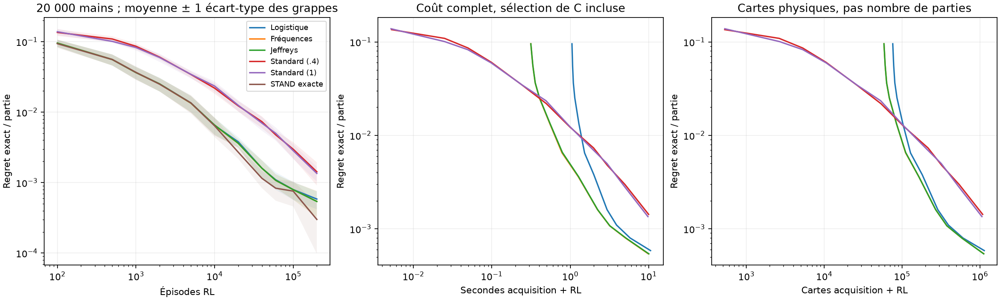
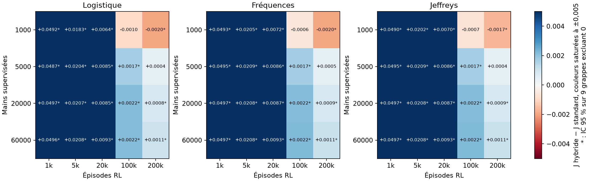

Estimer la valeur de l'action terminale pour accélérer le Q-learning
Une étude contrôlée sur le Blackjack · Alessandro Daouk et Wassim Ghnaya
La question
Faut-il tout apprendre en jouant ?
Un agent RL apprend en jouant, et chaque partie coûte.
Au Blackjack, rester termine la partie : sa valeur ne dépend que de la main finale du croupier.
Cette main se simule sans jouer. On peut donc l'estimer à part, par apprentissage supervisé.
Question : vaut-il mieux estimer cette valeur et la fixer, ou laisser le renforcement tout apprendre ?
La méthode
Deux modèles, une décision
Mains de croupier simulées→Modèle 1 · supervisé P(issue du croupier | carte visible)→VSTAND figée
Parties jouées→Modèle 2 · Q-learning n'apprend que QHIT→Tirer si QHIT > VSTAND
Le prix est connu d'avance : l'erreur du modèle 1 devient permanente, l'agent ne peut pas la corriger en jouant.
L'instrument
Un oracle exact plutôt que la simulation
280
états de décision : le jeu se résout exactement
0,95
écart-type du gain d'une partie
3,5 M
parties pour mesurer ±0,001 par simulation
Chaque politique est jugée par son gain espéré exact, calculé par un oracle indépendant, contrôlé par un second oracle et par Monte-Carlo. Seuil d'intérêt : 0,001 par partie, le coût d'une seule décision fausse.
Résultat principal · 28 jeux de données indépendants
+0,00214 par partie
IC 95 % [+0,00188 ; +0,00240], hybride meilleur dans 56 paires sur 56, à 20 000 mains et 100 000 parties.
L'hybride atteint en 10 000 parties le regret du standard à 40 000. Répliqué sur 10 nouvelles graines (88 paires sur 90).

Face aux autres algorithmes
Un gain d'information, pas d'algorithme
Regret exact
10 000 parties
100 000 parties
Hybride
0,0065
0,0008
Q-learning standard
0,0219
0,0030
RL à modèle appris
0,0224
0,0027
Dyna-Q
0,0251
0,0039
Expected SARSA
0,0451
0,0042
Contrôle Monte-Carlo
0,0637
0,0114
Un RL qui modélise tout à partir des parties fait jeu égal avec le Q-learning : la difficulté est d'estimer STAND avec un bruit de ±1 par observation.
La limite
L'hybride a un plancher
Il ne descend pas sous l'erreur de son modèle : regret limite 0,0030 avec 1 000 mains, 0,00013 avec 20 000.
Avec 1 000 mains, le standard le dépasse à 200 000 parties : −0,0020 [−0,0033 ; −0,0006].
C'est ce que prévoit la théorie.

Résultats négatifs conservés
Ce que la méthode n'apporte pas
En paquet infini, la régression logistique donne le même agent qu'une table de fréquences (équivalence à ±0,001), pour trois fois plus de temps : modèle saturé.
Une planification qui modélise aussi HIT fait mieux que l'hybride (+0,00069).
Avec des cartes équiprobables, l'avantage à 100 000 parties n'est plus établi : ce n'est pas une constante de la méthode.
Extension · sabot de 52 cartes
Le modèle 1 devient un vrai problème de ML
La loi du croupier dépend des cartes déjà sorties. Excès de log-loss (KL vers la loi exacte), 100 000 mains :
0,0046
Logistique sur la composition du sabot
0,0099
Gradient boosting
0,0189
Table par classe de compte Hi-Lo
Compromis biais-variance : les tables plafonnent à l'information qu'elles utilisent, le boosting apprend tout depuis zéro.
À information égale
La séparation accélère, l'information fixe le niveau